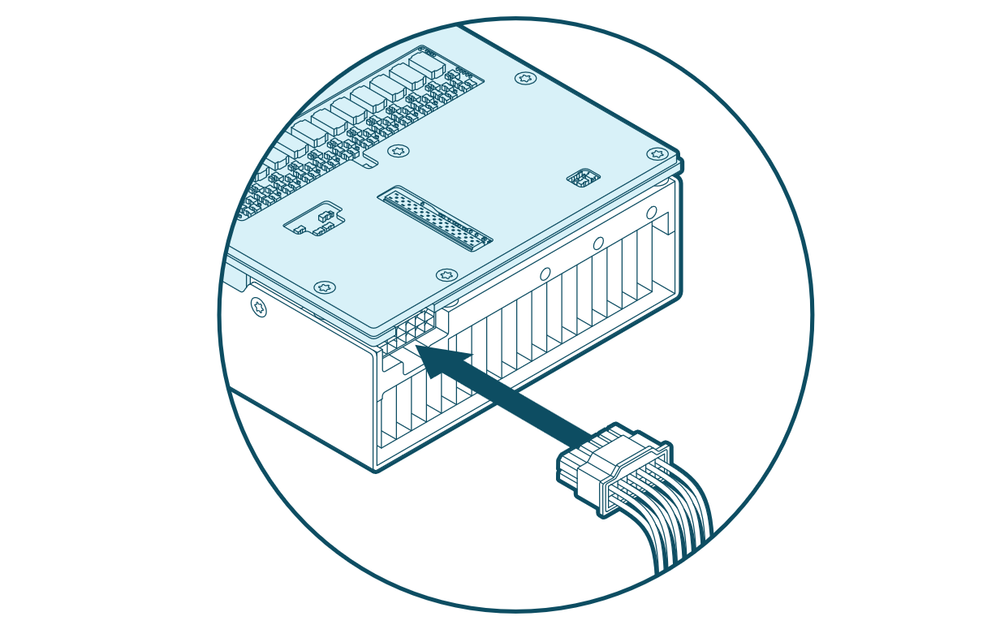

Hardware Installation
This document guides system administrators and users through the process of physically installing and connecting Tenstorrent Blackhole™ p100a, Blackhole™ p150a, and Blackhole™ p150b add-in boards into a host system. You will learn the necessary pre-installation steps, installation procedures for desktop workstations, and how to connect power.
Pre-Installation
Before you begin the installation process, complete the following steps:
Disconnect power from the host computer.
Verify that your system meets the following requirements:
PCI Express 5.0 x16 slot: For optimal performance, the board requires a x16 configuration without bifurcation.
Blackhole™ p100a and Blackhole™ p150a products are dual-slot width boards with active coolers. Tenstorrent recommends leaving the adjacent slot unoccupied to ensure optimal airflow.
Blackhole™ p150b is a dual-slot width board with a passive heatsink, designed for rack-mounted systems with sufficient active airflow.
Warning
An ATX 3.1 Certified power supply or better is required. Using an older or inadequate power supply may result in system instability.
One (1) 12+4-pin 12V-2x6 power connector.
Discharge static electricity from your body by wearing an ESD wrist strap (recommended) or by touching a grounded surface before touching system components or the add-in board.
Desktop Workstation Installation (p100a/p150a)
Note
Images shown might not fully represent your specific system configuration.
Insert the Blackhole™ add-in board into the PCIe x16 slot and secure it with the necessary screws. (A Blackhole™ p150a is pictured below for reference.)

Connecting Power
Connect a 12+4-pin 12V-2x6 power cable to the plug on the back of the add-in board.
Important
Ensure the power cable is fully and securely connected to prevent instability or damage.

Software Setup
For instructions on how to set up software for your Blackhole™ p100a, Blackhole™ p150a, or Blackhole™ p150b, refer to the Installing the Tenstorrent Software Stack guide.
Need Additional Support?
If you encounter any issues, or have a question that isn’t covered in the documentation, please raise a support request. Our team will review your request and provide assistance.